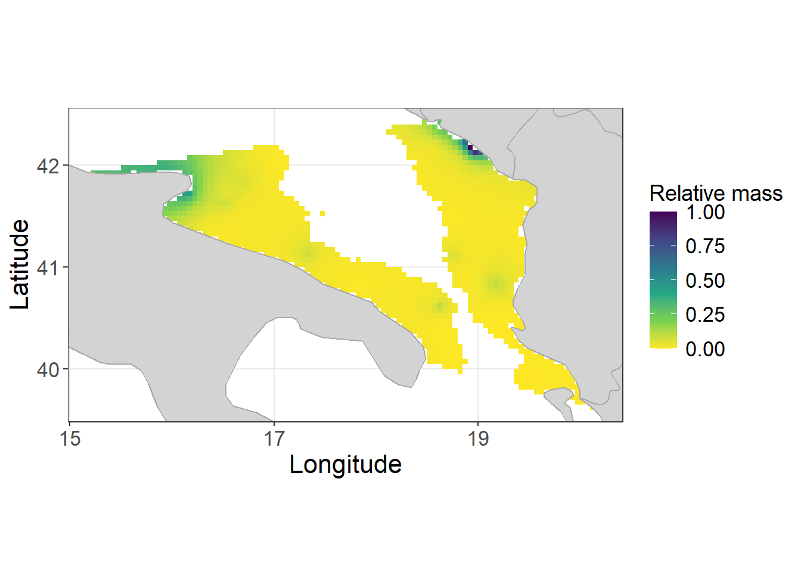
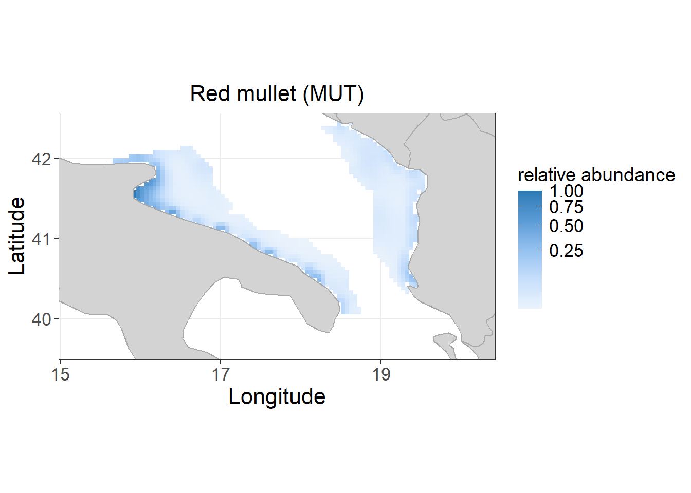
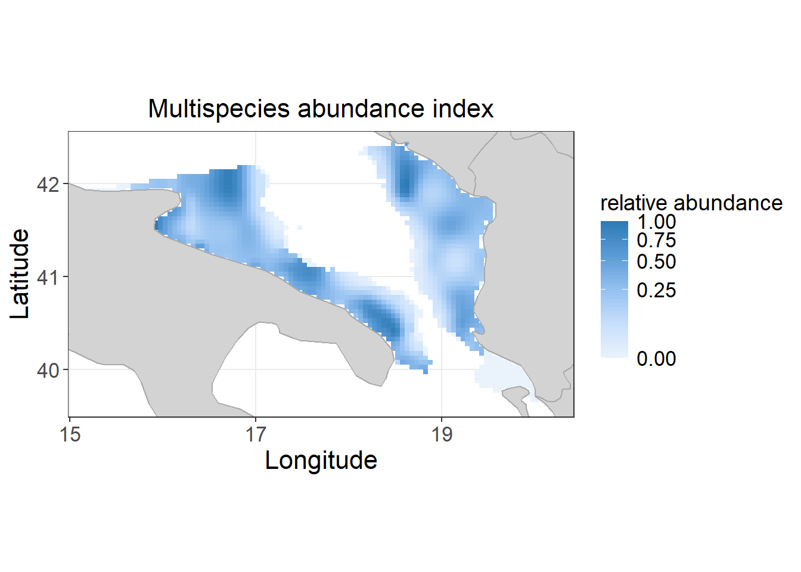
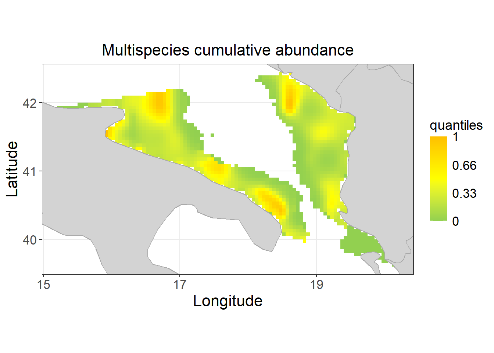
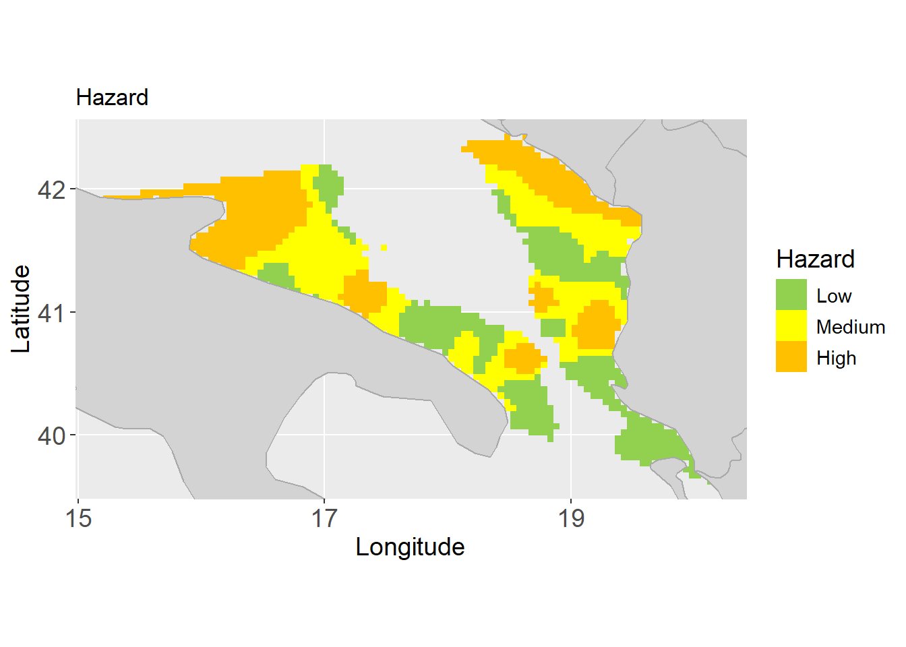
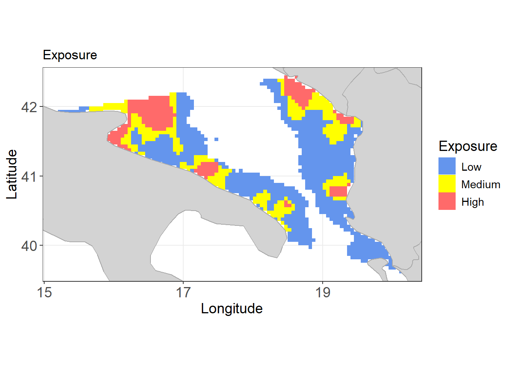
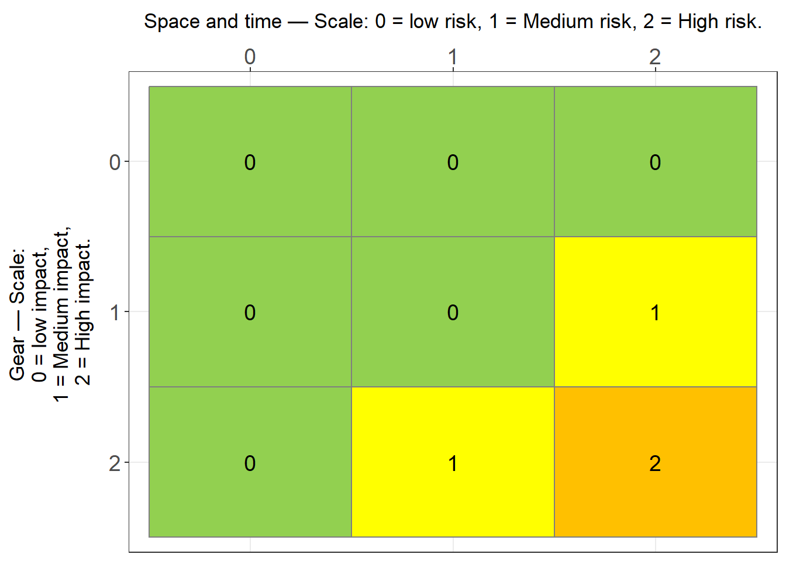
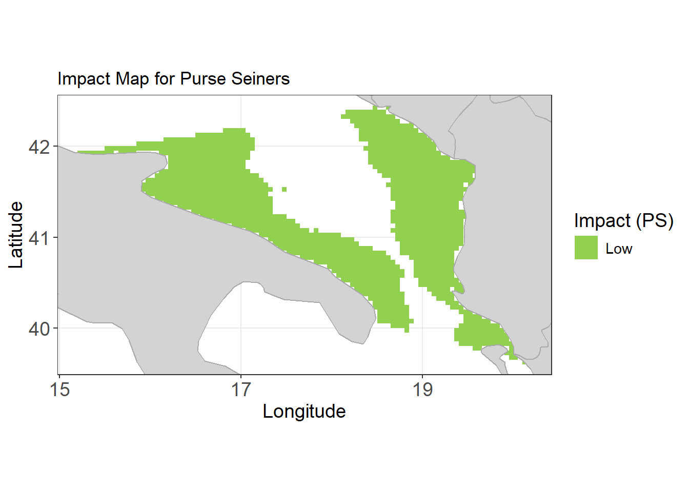
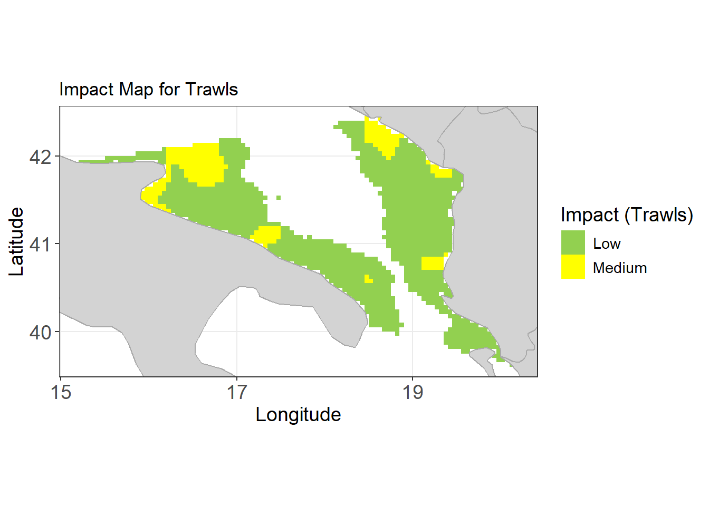
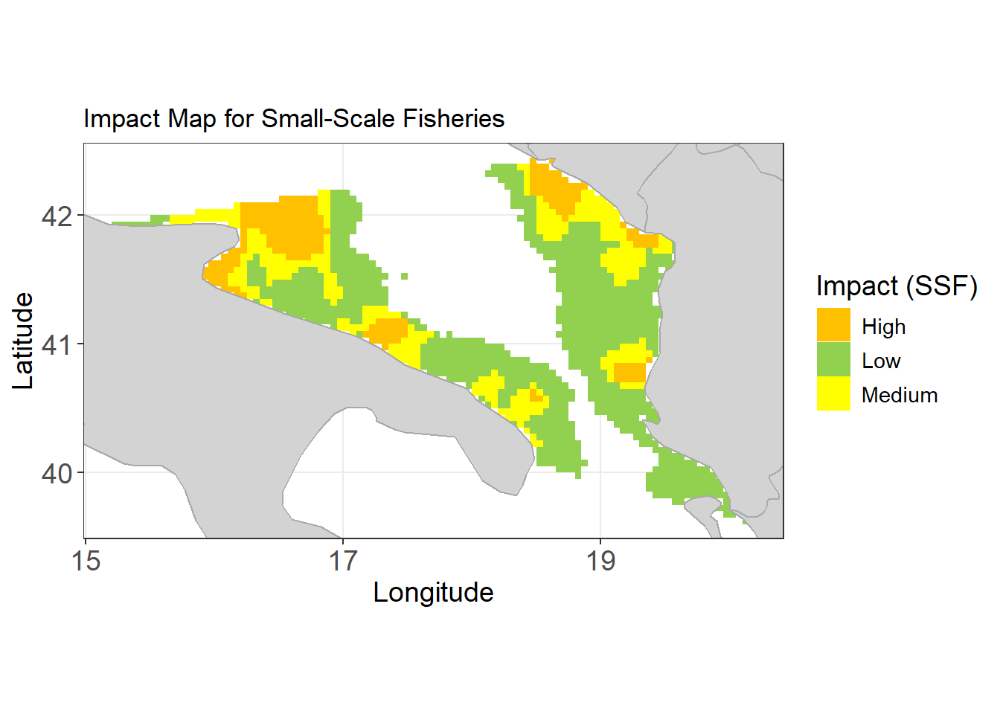

Compiled on 27/08/2025, 14:26Litter risk analysis
Data preparation
The script begins by preparing the working environment. All existing variables are cleared, and the required libraries for data manipulation and visualization are loaded. Two reference tables are then defined:
Litter categories table (cats): lists the different categories of marine litter considered in the analysis, each with a short code (cats) and a descriptive label (cats_names).
Fleet table (fleet_table): contains the fishing fleets included in the study, specifying their codes, full names, and associated impact levels (Low, Medium, High).
# Clean the environment
rm(list = ls(all = TRUE))
# Load necessary libraries
library(ggplot2)
library(raster)
library(dplyr)
library(tidyr)
cats <- data.frame(
cats=c("ADV","INGFB","INGSC","ENT","FR",
"SUP","Plastic","Rubber","Metal",
"Glass","Natural","Other"),
cats_names=c("Advection",
"Ingestion fish and birds",
"Ingestion sharks and cetaceans",
"Entanglement",
"Fishing related",
"SUP",
"Plastic",
"Rubber",
"Metal",
"Glass",
"Natural",
"Other"))
# Define fleet table with impact levels
fleet_table <- data.frame(
fleet_code = c("PS", "Trawls", "SSF"),
fleet_name = c("Purse Seiners", "Trawls", "Small-Scale Fisheries"),
fleet_impact = c("Low", "Medium", "High")
)After preparing the environment, the script defines a set of global parameters that control the subsequent analysis. These include: - Hazard thresholds (hazard_thrs): values used to classify the level of risk into low, medium, and high categories. - Years of interest (ys): the temporal window considered for the analysis, by default set to the last three years of the available time series. - AREA: the spatial domain of the analysis, which can be restricted to a specific GSA, subregion etc. or left unfiltered (NA).The user must also select the litter category to be analysed. By default, the script processes marine litter data expressed as mass density (kg/km²), although alternative settings can be specified through the variables response and response_name.
Finally, the script requires the definition of file paths: - a directory for storing the results of the analysis (resdir), which is automatically created if not already present, - and the directory containing the input data (data_dir).
hazard_thrs <- risk_thrs <- c(0.33,0.66)
# Initial parameters (modifiable by the user)
ys <- c(2019:2021) # Last three years of the time series
AREA <- 18 # Geographic Sub-Area (set to NA for no filtering)
litter_category <- "FR" # Litter category
response <- "kg_km2"
response_name <- "kg/km2"
# set results directory
wd <- "D:\\OneDrive - Coispa Tecnologia & Ricerca S.C.A.R.L\\SEAwise\\_____ARTICOLO_LITTER\\___Analysis_2025___\\Litter_SEAwise_quarto"
resdir <- file.path(wd, "output")
suppressWarnings(dir.create(resdir))
# set directory with data
data_dir <- file.path(wd, "input")Litter data
Load litter data
The script loads the litter dataset corresponding to the selected category and response variable. The data are filtered by the chosen years, and a unique cell identifier is created by combining the c-square code with the year.
litter_file <- paste0("Litter_",litter_category,"_",response,"_1.csv") # Litter data file
litter <- read.csv(file.path(resdir, litter_file), sep = ";")
cells <- unique(litter$id)
litter <- litter[litter$year %in% ys, ]
litter$id <- paste(litter$c_square, litter$year, sep = "_")Grid preparation
The grid data are imported and, if specified, filtered by the selected AREA. The grid is then expanded to cover all years of interest, and each cell is assigned a unique identifier (c_square + year). Litter predictions are merged with the grid, missing values are set to zero, and the data are aggregated by spatial cell. The resulting dataset contains mean litter values per cell, stored under the selected litter category.
# Load grid data
grid <- read.csv(file.path(data_dir, "grid_0.05_(0-800m)_GSA_csquare.csv"), sep = ";")
colnames(grid) <- c("id", "c_square", "x", "y", "AREA", "depth", "strata")
# Filter grid by AREA if AREA is not NA
if (!is.na(AREA)) {
grid <- grid[grid$AREA %in% AREA, ]
}
# Expand grid for all selected years
for (i in 1:length(ys)) {
gtemp <- grid
gtemp$year <- ys[i]
if (i == 1) {
g <- gtemp
} else {
g <- rbind(g, gtemp)
}
}
grid <- g
id <- paste(grid$c_square, grid$year, sep = "_")
grid$id <- id
gel <- merge(grid, litter[, c("id", "pred")], by.x = "id", by.y = "id", all.x = TRUE)
gel$pred[is.na(gel$pred)] <- 0 # Fill missing litter data with 0
# Dynamically summarize columns in `fleets` and the `pred` column
data <- gel %>%
group_by(c_square, x, y, AREA, depth, strata) %>%
summarise(litter = mean(pred, na.rm = TRUE), # Summarize pred column
.groups = "drop" # Optional: drop grouping after summarization
)
# Rename the last column to the litter category
colnames(data) <- c("c_square", "x", "y", "AREA", "depth", "strata", litter_category)Plot of litter distribution
The script visualizes the spatial distribution of fishery-related litter. Litter values are normalized to a 0–1 scale, and distribution maps are produced. The plots display relative abundance or mass, depending on the selected response variable.
# plot effort
xmin <- min(data$x)
xmax <- max(data$x)
ymin <- min(data$y)
ymax <- max(data$y)
xl <- c(xmin - (xmax - xmin) * 0.05, xmax + (xmax - xmin) * 0.05)
yl <- c(ymin - (ymax - ymin) * 0.05, ymax + (ymax - ymin) * 0.05)
x_breaks <- c(round(xmin, 0), round(xmin, 0) + round((xmax - xmin) / 2, 0), round(xmin, 0) + 2 * round((xmax - xmin) / 2, 0))
y_breaks <- c(round(ymin, 0), round(ymin, 0) + round((ymax - ymin) / 2, 0), round(ymin, 0) + 2 * round((ymax - ymin) / 2, 0))
world <- map_data("world")
# Rescaled in 0-1 range
data[, litter_category] <- (data[, litter_category] - min(data[, litter_category], na.rm = TRUE)) /
(max(data[, litter_category], na.rm = TRUE) - min(data[, litter_category], na.rm = TRUE))
type <- ifelse(response=="n_km2","abundance", "mass")
ggplot() +
coord_sf(xlim = xl, ylim = yl, expand = FALSE) +
geom_tile(data = data, aes_string(x = "x", y = "y", fill = litter_category)) +
scale_fill_viridis_c(option = "D", direction = -1) +
scale_x_continuous(breaks = x_breaks) +
scale_y_continuous(breaks = y_breaks) +
geom_polygon(data = world, aes(x = long, y = lat, group = group), fill = "lightgrey", color = "darkgrey") +
theme_bw() +
theme(
plot.title = element_text(size = 16, hjust = 0.5),
axis.title = element_text(size = 16),
axis.text = element_text(size = 13),
legend.title = element_text(size = 14),
legend.text = element_text(size = 13)
)+
xlab("Longitude") +
ylab("Latitude") +
labs(fill = paste("Relative",type, sep = " ")) +
ggtitle(paste0())
Species data
The script imports species-specific abundance/biomass data (n/km2) for selected species (e.g., European hake – HKE, red mullet – MUT), stored in the data_dir folder. For each species, data are filtered by year, averaged across spatial cells, and normalized to a 0–1 range. The number of species included in the analysis can be modified by updating the variables species_files and species_names accordingly. These datasets are then merged with the litter data, and a combined multispecies index (SP) is calculated by summing the normalized abundances and rescaling the result.
# Define species file names and column names dynamically
species_files <- c("HKE_GSA18_(abundance)_0.05.csv", "MUT_GSA18_(abundance)_0.05.csv") # Add more files here #
species_names <- c("HKE", "MUT") # Add corresponding species names here
# Prepare data for each species
species_data <- list()
i=1
for (i in seq_along(species_files)) {
sp <- read.table(file.path(data_dir, species_files[i]), sep = ";", header = TRUE)
sp <- sp[sp$year %in% ys, c("c_square", "year", "pred")]
sp <- sp %>% group_by(c_square) %>% summarise(pred = mean(pred, na.rm = TRUE))
colnames(sp)[ncol(sp)] <- species_names[i]
# Rescaled in 0-1 range
sp[,species_names[i]] <- sp[,species_names[i]] / max(sp[,species_names[i]], na.rm=TRUE )
species_data[[i]] <- sp
}
# Merge species data with the main data
for (sp_data in species_data) {
data <- merge(data, sp_data, by = "c_square", all.x = TRUE)
}
# Calculate combined species abundance (e.g., mean or sum across all species)
if (length(species_names)==1) {
data$SP <- data[, species_names]
} else {
data$SP <- rowSums(data[, species_names], na.rm = TRUE) # Change to rowMeans if needed
}
# Final data ready for analysis
data$SP <- data$SP / max(data$SP, na.rm=TRUE)Plot species distribution
This step visualizes the spatial distribution of each species included in the analysis, as well as the aggregated multispecies index. For each species, relative abundance maps are generated using a gradient scale, while the multispecies cumulative index is plotted with thresholds highlighting different quantile levels. These maps provide a spatial overview of single-species patterns and cumulative patterns too.
# Define custom titles for each column
title_mapping <- list(
"HKE" = "European hake (HKE)",
"MUT" = "Red mullet (MUT)",
"SP" = "Multispecies abundance index" # always keep this category
)
# Define plot limits and breaks
xmin <- min(data$x, na.rm = TRUE)
xmax <- max(data$x, na.rm = TRUE)
ymin <- min(data$y, na.rm = TRUE)
ymax <- max(data$y, na.rm = TRUE)
xl <- c(xmin - (xmax - xmin) * 0.05, xmax + (xmax - xmin) * 0.05)
yl <- c(ymin - (ymax - ymin) * 0.05, ymax + (ymax - ymin) * 0.05)
x_breaks <- c(round(xmin, 0), round(xmin, 0) + round((xmax - xmin) / 2, 0), round(xmin, 0) + 2 * round((xmax - xmin) / 2, 0))
y_breaks <- c(round(ymin, 0), round(ymin, 0) + round((ymax - ymin) / 2, 0), round(ymin, 0) + 2 * round((ymax - ymin) / 2, 0))
# Load world map data
world <- map_data("world")
# List of columns to plot (species and aggregated data)
columns_to_plot <- c(species_names, "SP") # `species_names` contains names of individual species
data$SP[is.nan(data$SP)] <- NA
data$SPnorm <- data$SP / max(data$SP, na.rm=TRUE)
# Define global min and max across species and aggregated data
global_min <- min(sapply(columns_to_plot, function(col) min(data[[col]], na.rm = TRUE)))
global_max <- max(sapply(columns_to_plot, function(col) max(data[[col]], na.rm = TRUE)))
muted_colors <- c("#eaf3fc", "#c7dffc", "#94c1f0", "#5a9bd6", "#2c7bb6")
# Generate maps for each species and the aggregated data
for (col_name in columns_to_plot) {
# Calculate local min and max for the column
local_min <- min(data[[col_name]], na.rm = TRUE)
local_max <- max(data[[col_name]], na.rm = TRUE)
# Get the title for the current column
plot_title <- title_mapping[[col_name]] # Map column to title
p <- ggplot() +
coord_sf(xlim = xl, ylim = yl, expand = FALSE) +
geom_tile(data = data[!is.na(data[[col_name]]), ], # Exclude NA values for the column
aes_string(x = "x", y = "y", fill = col_name)) +
scale_fill_gradientn(
colors = muted_colors, # Use the muted palette
name = "relative abundance", # Consistent legend title
trans = "sqrt", # Transformation for better visual spread
limits = c(local_min, local_max), # Local scale for each map
na.value = "white" # Handle NA values with white
) +
scale_x_continuous(breaks = x_breaks) +
scale_y_continuous(breaks = y_breaks) +
geom_polygon(data = world, aes(x = long, y = lat, group = group), fill = "lightgrey", color = "darkgrey") +
theme_bw() +
theme(
plot.title = element_text(size = 16, hjust = 0.5),
axis.title = element_text(size = 16),
axis.text = element_text(size = 13),
legend.title = element_text(size = 14),
legend.text = element_text(size = 13)
)+
xlab("Longitude") +
ylab("Latitude") +
ggtitle(plot_title) # Use custom title
print(p)
}

p <- ggplot() +
coord_sf(xlim = xl, ylim = yl, expand = FALSE) +
geom_tile(data = data[!is.na(data[["SPnorm"]]), ], # Exclude NA values for the column
aes_string(x = "x", y = "y", fill = "SPnorm")) +
scale_fill_gradientn(
colors = c("#92d050", "#ffff00", "#ffc000"), # Custom three-color scale
breaks = c(0, hazard_thrs[1], hazard_thrs[2], 1), # Custom breaks
limits = c(0, 1), # Ensure scale goes from 0 to 1
labels = c("0", as.character(hazard_thrs[1]), as.character(hazard_thrs[2]), "1"), # Custom labels
name = "quantiles" # Legend title
) +
scale_x_continuous(breaks = x_breaks) +
scale_y_continuous(breaks = y_breaks) +
geom_polygon(data = world, aes(x = long, y = lat, group = group), fill = "lightgrey", color = "darkgrey") +
theme_bw() +
theme(
plot.title = element_text(size = 16, hjust = 0.5),
axis.title = element_text(size = 16),
axis.text = element_text(size = 13),
legend.title = element_text(size = 14),
legend.text = element_text(size = 13)
)+
xlab("Longitude") +
ylab("Latitude") +
ggtitle(paste0("Multispecies cumulative abundance")) # Dynamically set title based on column name
print(p)
Hazard estimation
This section classifies the study area into hazard levels based on fishery-related litter mass. The 33rd and 66th percentiles, defined above, are used as thresholds to distinguish low, medium, and high hazard categories by default. Each spatial cell is assigned to one of these categories, and the results are visualized in a hazard map showing the spatial distribution of hazard across the area.

Risk classification
This section integrates hazard levels with multispecies abundance to assess overall exposure risk. Percentile ranks of the multispecies index (SP) are combined with hazard classes (0 = Low, 1 = Medium, 2 = High) to assign each spatial cell to one of three exposure categories:
Low:
Hazard = Low (0), regardless of species abundance;
Hazard = Medium (1) with SP ≤ 66th percentile;
Hazard = High (2) with SP ≤ 33rd percentile.
Medium:
Hazard = Medium (1) with SP > 66th percentile;
Hazard = High (2) with 33rd < SP ≤ 66th percentile.
High:
- Hazard = High (2) with SP > 66th percentile.
The resulting classification is visualized on a risk exposure map, highlighting areas where high litter hazard overlaps with higher biological importance.

Impact classification
In the final step, the script translates exposure levels into fleet-specific impact maps. For each fishing fleet, the assigned impact level (Low, Medium, High) is combined with the exposure categories to produce a spatial classification, as decribed in the table below.

The resulting impact values are visualized in dedicated maps for each fleet, highlighting spatial patterns of potential fleet-related impacts.


